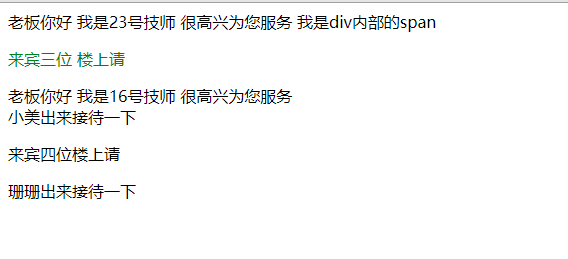

原文出处:本文由博客园博主亚峰牛皮提供。
原文连接:https://www.cnblogs.com/yafeng666/p/12103394.html
原文连接:https://www.cnblogs.com/yafeng666/p/12103394.html
初始CSS
一、form表单补充
- form表单关键性的属性补充
form表单
关键性的属性
action
控制的是数据的提交路径
1、不写 默认是朝着当前页面所在的地址提交
2、全路径
3、后缀（/index/）
method
控制的是提交方式
form表单默认是get请求 method='get'
你也可以指定成post请求 method='post'
enctype
控制的是数据提交的编码格式
默认情况下form表单是不能够直接发送文件的
如果你要发送文件 必须将该参数由默认的urlencoded改为formdata
注意事项：
1、获取用户输入的标签 都是用value属性来存放用户的输入
获取用户输入的标签都应该有name属性 就类似于字典的key
value属性就类似于字典中的value
2、如何给input设置默认
可以直接给input标签加value属性
3、input框如何设置提示信息
username:<input type='text' value='jason' placeholder='用户名'>二、验证form提交数据
- 结合Flask演示验证
后端框架
Django
Flask
Tornado
Flask框架
pip install Flask
get请求能够携带参数 但是参数的携带方式是直接跟在url后面的
url?xxx=ooo&yyy=bbb&lll=ccc
特点：
1、数据全是明文
2、数据大小有限 大概可能在4kb左右
3、get请求不应该携带隐私信息- 初始后端框架
from flask import Flask, request
app = Flask(__name__)
@app.route('/index', methods=['GET', 'POST'])
def func():
print(request.form) # 获取普通数据
print(request.files)
file_obj = request.files.get('myfile')
file_obj.save('xxx.png')
return "OK"
app.run()
- form表单
<!DOCTYPE html>
<html lang="en">
<head>
<meta charset="UTF-8">
<title>Title</title>
</head>
<body>
<form action="http://127.0.0.1:5000/index" method="post" enctype="multipart/form-data">
<p>用户名:<input type="text" placeholder="用户名" name="username"></p>
<p>密码:<input type="password" name="password"></p>
<p>日期:
<input type="date" name="birth">
</p>
<p>性别:
男:<input type="radio" name="gender" value="male">
女:<input type="radio" name="gender" value="female">
</p>
<p>爱好:
篮球:<input type="checkbox" name="hobby" value="basketball">
足球:<input type="checkbox" name="hobby" value="football">
双色球:<input type="checkbox" name="hobby" value="doublecolorball">
</p>
<p>省份:
<select name="province" id="">
<option value="bj">北京</option>
<option value="sh">上海</option>
<option value="sz">深圳</option>
</select>
</p>
<p>女友:
<select name="girlfriend" id="" multiple> # multiple可以多选
<option value="c">苍老师</option>
<option value="s">三上悠亚老师</option>
<option value="m">吉泽明步老师</option>
<option value="xz">小泽老师</option>
<option value="xhjy">新恒结衣老师</option>
</select>
</p>
<p>个人简介:
<textarea name="information" id="" cols="30" rows="10"></textarea>
</p>
<p>个人简历:
<input type="file" name="myfile">
</p>
<input type="submit" value="提交">
</form>
</body>
</html>三、CSS
- 理论知识
什么是css?
css其实就是层叠样式表 说白了其实就是用来调节标签的样式
css的注释
单行注释：/*注释*/
多行注释：/*
注释1
注释2
注释...
*/
注释的使用：
css应该是一个独立的文件
比如：
/*这是小米首页的css样式文件*/
/*页面通用样式*/
/*顶部导航条样式*/
/*侧边菜单栏样式*/
css的语法结构
选择器 {属性名：属性值; 属性名1：属性值1; 属性名2： 属性值2;}- css的三种引入方式
css的三种引入方式
1、外部css文件（最正规的书写方式）
2、head内style标签内部直接书写css代码（为了演示方便可以使用这种）
3、标签内部通过style属性直接书写对应的样式（不推荐）
- mycss.css
mycss.css文件
/*这是一个非常牛逼的页面的css样式文件*/
/*公共样式*/
p { /*p是选择器*/
color: greenyellow; /*这里面是属性名:属性值*/
}- HTML演示
<!DOCTYPE html>
<html lang="en">
<head>
<meta charset="UTF-8">
<title>Title</title>
<!--第一种引入在head里引入-->
<!-- <link rel="stylesheet" href="mycss.css">-->
<!--第二种引入方式-->
<!-- <style>-->
<!-- p {-->
<!-- color: red;-->
<!-- }-->
<!-- </style>-->
</head>
<body>
<!--第三种引入-->
<p style="color: blue">上海这个地方就像是希腊神话里的魔女岛 好好的人来了 也会变成畜生</p>
</body>
</html>四、如何学习css？
- 方法
1、如何查找标签？
基本选择器
组合选择器
属性选择器
所有的标签都可以有默认的属性比如：
id
class
标签还可以有自定义的属性 并且可以有多个
<input type='text' username='jason' xxx='ooo'>
分组与嵌套
伪类选择器
伪元素选择器
a链接标签
a标签默认的颜色是蓝色 但是只要你点过一次 就会变成紫色 浏览器会记住你有没有点过
2、如何调节样式？
五、css之查找标签
- 基本选择器
<!DOCTYPE html>
<html lang="en">
<head>
<meta charset="UTF-8">
<title>Title</title>
<style>
/*!*标签选择器 元素选择器*!*/
/*div { !*div将页面上所有的div标签内部的文本变成你要想的颜色*!*/
/* color: red;*/
/*}*/
/*类的选择器 点号加一个对象*/
/*.c1 { !*让所有的具有c1类属性值的标签内部文本变成你想要的颜色*!*/
/* color: blue;*/
/*}*/
/*id选择器 #号加id*/
/*#d1 { !*将id为d1的标签内部的文件变成你想要的颜色*!*/
/* color: green;*/
/*}*/
/*通用选择器 *号*/
/** { !*页面上所有的标签统一修改样式*!*/
/* color: deeppink;*/
/*}*/
</style>
</head>
<body>
<div class="c1">老板你好 我是23号技师 很高兴为您服务
<span>我是div内部的span</span> #span是划分区域的
</div>
<p id="d1" class="c1">来宾三位 楼上请</p>
<div>老板你好 我是16号技师 很高兴为您服务</div>
<span class="c1">小美出来接待一下</span>
<p>来宾四位楼上请</p>
<span id="d2">珊珊出来接待一下</span>
</body>
</html>

- 组合选择器
<!DOCTYPE html>
<html lang="en">
<head>
<meta charset="UTF-8">
<title>Title</title>
<style>
/*后代选择器*/
/*div span { !*空格表示div内部的所有后代span没有层级限制*!*/
/* color: red;*/
/*}*/
/*儿子选择器*/
/*div > span { !*>大于号表示div内部的儿子*!*/
/* color: green;*/
/*}*/
/*毗邻选择器*/
/*div + span { !*下面的紧接着的第一个标签*!*/
/* color: red;*/
/*}*/
/*弟弟选择器*/
div ~ span { /*同级别下面的所有的标签*/
color: deeppink;
}
</style>
</head>
<body>
<div>
<span>div内部的第一个span</span>
<p>div内部的p
<span>div内部的p内部的span</span>
</p>
<span>div内部的最后一个span</span>
</div>
<span>div下面的span</span>
<span>div下面的span</span>
<span>div下面的span</span>
<span>div下面的span</span>
<span>div下面的span</span>
<span>div下面的span</span>
<div>弟弟救我
<p>我来舔你了</p>
</div>
<span>你会被我活活骚死</span>
</body>
</html>- 属性选择器
<!DOCTYPE html>
<html lang="en">
<head>
<meta charset="UTF-8">
<title>Title</title>
<style>
/*属性选择器 [] */
/*[username] { !*找到页面上所有具有username属性名的标签*!*/
/* background-color: blue;*/
/*}*/
/*进一步的属性选择器 [] */
/*[username='yafeng'] { !*找到页面上属性名是username并且属性值叫yafeng的标签*!*/
/* background-color: aqua;*/
/*}*/
/*更进一步的属性选择器 [] */
input[username='yafeng'] { /*找到页面上属性名是username并且属性值叫yafeng的input标签*/
background-color: brown;
}
</style>
</head>
<body>
<input type="text" username="yafeng">
<input type="text" username="reba">
<input type="text" username="jason">
<input type="text" username="tank">
<input type="text" username="sean">
<p username="yafeng">亚峰你真帅啊</p>
<div username="reba">热巴真美啊</div>
<span username="jason">jason最爱大宝剑啊</span>
</body>
</html>- 分组与嵌套
<!DOCTYPE html>
<html lang="en">
<head>
<meta charset="UTF-8">
<title>Title</title>
<style>
/*div,p,span { !*查找具有div,p,span的标签*!*/
/* color: brown;*/
/*}*/
/*.c1,#d1,p { !*查找具有c1, d1,p的标签*!*/
/* color: aqua;*/
/*}*/
/*.c1 h1 { !*找具有c1属性值的标签 后代的h1*!*/
/* color: blue;*/
/*}*/
</style>
</head>
<body>
<div class="c1">亚峰最帅 啊 真的好帅啊 怎么可以这么帅
<h1>我是h标签</h1>
</div>
<span id="d1">啊 热巴好美啊 怎么可以这么美啊</span>
<p>我要年薪百万啊</p>
</body>
</html>- 伪类选择器
<!DOCTYPE html>
<html lang="en">
<head>
<meta charset="UTF-8">
<title>Title</title>
<style>
a:link { /*未访问的链接*/
color: aqua;
}
a:hover { /*鼠标悬浮*/
color: black;
}
a:active { /*选定的的链接*/
color: green;
}
a:visited { /*已访问过的链接会变色*/
color: gray;
}
input:focus { /*输入框获取焦点的样式*/
background-color: red;
}
</style>
</head>
<body>
<a href="https://www.mzitu.com">点我有你好看哦</a>
<a href="https://www.baidu.com">点我</a>
<a href="https://www.jd.com">点我1</a>
<a href="https://www.xiaomi.com">点我2</a>
<input type="text">
</body>
</html>- 伪元素选择器
<!DOCTYPE html>
<html lang="en">
<head>
<meta charset="UTF-8">
<title>Title</title>
<style>
p:first-letter { /*给首字母设置特殊样式*/
color: red;
font-size: 48px;
}
p:before { /*在每个<p>元素之前插入内容*/
content: '你好啊';
color: red;
}
p:after { /*在每个<p>元素之后插入内容*/
content: '大家都要好好的 加油吧！！！';
color: blue;
}
</style>
</head>
<body>
<p>大家好啊 家人身体健康 </p>
</body>
</html>